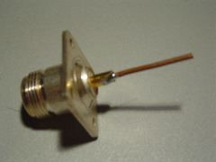

Building the Cylinder (Can) Waveguide
We chose to build the antenna for
2.442GHz, or channel 7, as this is close to the center of the 13 channels available
to us (US designs use channel 6 (2.437Ghz), as they have 11 channels).
I have included a key lengths calculator in the form below.
Nb.Rectangular waveguides use a different formulae (see Rectangular Waveguide).
The final product only needs to be accurate to about 1mm as this will only shift the frequency
within the range of the 802.11 spectrum. A smaller cavity length will shift the frequency response
to that slot to a higher channel. A longer slot cavity length will shift it down.
Methods and madness
I measured to .1mm using vernier callipers, on the assumption that errors in cutting might bring that
closer to the 1mm error mark. There are only one to make, and you can't go too wrong, i.e. the probe
(N-Socket) position.
Misc Notes
- The probe is a 2mm diameter copper wire soldered into an N-Socket and cut to 31mm (1/4 free space
wavelength, including the protruding bit of the N-Socket).
- The N-Socket is held down with nylon screws. If you use metal screws,
use stainless steal ones and keep them short so they don't protrude into the cavity.
- Water in the antenna, or spider and insects will be a problem. One suggestion is to seal around the
edges of the reflector with silicone and cover the open end with a piece of plastic (microwave friendly and thin).

N-Socket with 1/4 wavelength copper wire (including the length of the bit of the N-Socket it is soldered into). This becomes the probe for the antenna.